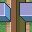
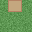

Glossary A...B |
A...B |
C...F |
G...O |
P...S |
T...Z |
A*
An algorithm for finding the shortest path between two points (or tiles) in a maze, usually start tile to finish tile, avoiding obstacles or dead-ends. A Maze can have more than one shortest path.
Active sprite
A maze wandering sprite that is able to alter its environment, ie the maze around it. For instance by pushing obstacle blocks (as in Sokoban), creating or removing pathways, or opening closing gates. This will affect the possible path choices for itself and any other wandering sprites. Note it might be possible for sprites to become trapped.
Agent
A Stagecast character that fulfils a specific function and then deletes itself. Agents make it easier to write more complex Stagecast rules as they are independent of specific characters or sims. Example agent functions are:
1/ Jump a character to a random stage location.
2/ Insert a fixed or random time delay (pause).
3/ Combine several 'layered' characters into a single character. See 'Layered Tile'.
Algorithm
A step by step set of rules. For instance to build a perfect maze, or to find the shortest path between two points (A-star).
Alternative
Tiles with the same index value can have different designs.
Tile-15 alternatives affect maze connections, so wandering sprites will need to take notice, but the tiles edge (or corner) matching requirements remains the same.
|  |
Blank (Tile-0) alternatives do not affect maze connections and are usually applied at random to improve the look of a maze.
|  |
Straight (Tile-5/Tile-10) alternatives can also be used.
Array
The square grid onto which the Wang tiles are placed. Same as Stagecast 'stage'.
Arrow Maze
See Directed maze.
Bend tile
An edge or corner path tile with a 90 degree turn or curve.  or
or  Also see twin bend tile.
Also see twin bend tile.
Bias (balance)
Duplicating some of the tiles in a Wang Tileset to alter the balance (or density) of paths in a maze layout. Because tiles are picked at random from the tileset, adding, say, an extra cross-over tile will increase the number of cross over paths in the final layout.
Adding extra blank tiles will make the layout sparse.
Adding extra bend tiles will make paths more twisty.
Adding extra straight tiles will make the layout more tubular.
Adding extra junction tiles will make the layout more tree like.
Adding extra crossover tiles will increase the weave of the layout.
Bifurcation
A maze path that branches (splits into two). See 'Fork Tile'.
Bitwise
A mathematical procedure for adding up binary (or tertiary) numbers to produce a unique index number. For example, a 2-edge tile edges are given 'weightings' of 1, 2, 4, and 8. Every combination of edge then produces a unique index between 0 and 15.
3-edge tiles are weighted 1, 3, 9 and 27.
Blank tile
An empty tile, tile-0. Usually included in a ceramic tileset. 
Blob tileset
A reduced 2-edge 2-corner tileset containing 47 from a possible 256 tiles. There are a couple of reliable methods of generating the required 47 tiles. See Blob tileset page. The tiles are good for covering carpet (or rug) like areas.
| 0 | 1 | 5 | 7 | 17 | 21 | 23 | 29 | 31 | 85 | 87 | 95 | 119 | 127 | 255 |
| 4 16 64 |
20 80 65 |
28 112 193 |
68 | 84 81 69 |
92 113 197 |
116 209 71 |
124 241 199 |
93 117 213 |
125 245 215 |
221 | 253 247 223 |
Tile weightings are allocated clockwise from the top (North) edge as follows:
| NorthWest =128 |
North = 1 |
NorthEast = 2 |
| West = 64 |
East = 4 |
|
| SouthWest = 32 |
South = 16 |
SouthEast = 8 |
The Blob 2-order tile has a yellow North, East and West edge, as well as a North-East corner, and so has an index of 1+2+4+64=71.
Block tiles
Tiles that do not need to be edge or corner matched. Can be used to create random path or terrain layouts. 
Block maze (Hedge maze) Wall blocks joined only at their corners are best avoided. Floor tiles may show wall shadows for 3d effect. |
Border
The stage perimeter. Wang tiles adjoining the stage border can have their edges or corners set to a particular type, or set to the 'opposite' border if the stage wraps.
Braid maze
A maze without dead-end paths. Dead-ends that do form are fused with an adjacent path. Braid mazes cannot be perfect. They are more difficult/interesting to solve than a perfect maze, as you spend a great deal of time simply going around in circles.
Branch Tile
See 'Fork Tile'.
Glossary A...B |
A...B |
C...F |
G...O |
P...S |
T...Z |